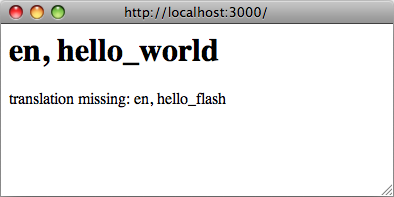

DO NOT READ THIS FILE ON GITHUB, GUIDES ARE PUBLISHED ON http://guides.rubyonrails.org.
Rails Internationalization (I18n) API
The Ruby I18n (shorthand for internationalization) gem which is shipped with Ruby on Rails (starting from Rails 2.2) provides an easy-to-use and extensible framework for translating your application to a single custom language other than English or for providing multi-language support in your application.
The process of "internationalization" usually means to abstract all strings and other locale specific bits (such as date or currency formats) out of your application. The process of "localization" means to provide translations and localized formats for these bits.[^1]
So, in the process of internationalizing your Rails application you have to:
- Ensure you have support for i18n.
- Tell Rails where to find locale dictionaries.
- Tell Rails how to set, preserve and switch locales.
In the process of localizing your application you'll probably want to do the following three things:
- Replace or supplement Rails' default locale - e.g. date and time formats, month names, Active Record model names, etc.
- Abstract strings in your application into keyed dictionaries - e.g. flash messages, static text in your views, etc.
- Store the resulting dictionaries somewhere.
This guide will walk you through the I18n API and contains a tutorial on how to internationalize a Rails application from the start.
After reading this guide, you will know:
- How I18n works in Ruby on
Rails - How to correctly use
I18ninto a RESTful application in various ways - How to use
I18nto translate Active Record errors or Action Mailer E-mail subjects - Some other tools to go further with the translation process of your application
NOTE: The Ruby I18n framework provides you with all necessary means for internationalization/localization of your Rails application. You may, also use various gems available to add additional functionality or features. See the rails-i18n gem for more information.
How I18n in Ruby on Rails Works
Internationalization is a complex problem. Natural languages differ in so many ways (e.g. in pluralization rules) that it is hard to provide tools for solving all problems at once. For that reason the Rails I18n API focuses on:
- providing support for English and similar languages out of the box
- making it easy to customize and extend everything for other languages
As part of this solution, every static string in the Rails framework - e.g. Active Record validation messages, time and date formats - has been internationalized. Localization of a Rails application means defining translated values for these strings in desired languages.
To localize store and update content in your application (e.g. translate blog posts), see the Translating model content section.
The Overall Architecture of the Library
Thus, the Ruby I18n gem is split into two parts:
- The public API of the i18n framework - a Ruby module with public methods that define how the library works
- A default backend (which is intentionally named Simple backend) that implements these methods
As a user you should always only access the public methods on the I18n module, but it is useful to know about the capabilities of the backend.
NOTE: It is possible to swap the shipped Simple backend with a more powerful one, which would store translation data in a relational database, GetText dictionary, or similar. See section Using different backends below.
The Public I18n API
The most important methods of the I18n API are:
translate # Lookup text translations
localize # Localize Date and Time objects to local formatsThese have the aliases #t and #l so you can use them like this:
I18n.t 'store.title'
I18n.l Time.nowThere are also attribute readers and writers for the following attributes:
load_path # Announce your custom translation files
locale # Get and set the current locale
default_locale # Get and set the default locale
available_locales # Whitelist locales available for the application
enforce_available_locales # Enforce locale whitelisting (true or false)
exception_handler # Use a different exception_handler
backend # Use a different backendSo, let's internationalize a simple Rails application from the ground up in the next chapters!
Setup the Rails Application for Internationalization
There are a few steps to get up and running with I18n support for a Rails application.
Configure the I18n Module
Following the convention over configuration philosophy, Rails I18n provides reasonable default translation strings. When different translation strings are needed, they can be overridden.
Rails adds all .rb and .yml files from the config/locales directory to the translations load path, automatically.
The default en.yml locale in this directory contains a sample pair of translation strings:
en:
hello: "Hello world"
This means, that in the :en locale, the key hello will map to the Hello world string. Every string inside Rails is internationalized in this way, see for instance Active Model validation messages in the activemodel/lib/active_model/locale/en.yml file or time and date formats in the activesupport/lib/active_support/locale/en.yml file. You can use YAML or standard Ruby Hashes to store translations in the default (Simple) backend.
The I18n library will use English as a default locale, i.e. if a different locale is not set, :en will be used for looking up translations.
NOTE: The i18n library takes a pragmatic approach to locale keys (after some discussion), including only the locale ("language") part, like :en, :pl, not the region part, like :en-US or :en-GB, which are traditionally used for separating "languages" and "regional setting" or "dialects". Many international applications use only the "language" element of a locale such as :cs, :th or :es (for Czech, Thai and Spanish). However, there are also regional differences within different language groups that may be important. For instance, in the :en-US locale you would have $ as a currency symbol, while in :en-GB, you would have £. Nothing stops you from separating regional and other settings in this way: you just have to provide full "English - United Kingdom" locale in a :en-GB dictionary.
The translations load path (I18n.load_path) is an array of paths to files that will be loaded automatically. Configuring this path allows for customization of translations directory structure and file naming scheme.
NOTE: The backend lazy-loads these translations when a translation is looked up for the first time. This backend can be swapped with something else even after translations have already been announced.
You can change the default locale as well as configure the translations load paths in config/application.rb as follows:
config.i18n.load_path += Dir[Rails.root.join('my', 'locales', '*.{rb,yml}').to_s]
config.i18n.default_locale = :deThe load path must be specified before any translations are looked up. To change the default locale from an initializer instead of config/application.rb:
# config/initializers/locale.rb
# Where the I18n library should search for translation files
I18n.load_path += Dir[Rails.root.join('lib', 'locale', '*.{rb,yml}')]
# Whitelist locales available for the application
I18n.available_locales = [:en, :pt]
# Set default locale to something other than :en
I18n.default_locale = :ptManaging the Locale across Requests
The default locale is used for all translations unless I18n.locale is explicitly set.
A localized application will likely need to provide support for multiple locales. To accomplish this, the locale should be set at the beginning of each request so that all strings are translated using the desired locale during the lifetime of that request.
The locale can be set in a before_action in the ApplicationController:
before_action :set_locale
def set_locale
I18n.locale = params[:locale] || I18n.default_locale
endThis example illustrates this using a URL query parameter to set the locale (e.g. http://example.com/books?locale=pt). With this approach, http://localhost:3000?locale=pt renders the Portuguese localization, while http://localhost:3000?locale=de loads a German localization.
The locale can be set using one of many different approaches.
Setting the Locale from the Domain Name
One option you have is to set the locale from the domain name where your application runs. For example, we want www.example.com to load the English (or default) locale, and www.example.es to load the Spanish locale. Thus the top-level domain name is used for locale setting. This has several advantages:
- The locale is an obvious part of the URL.
- People intuitively grasp in which language the content will be displayed.
- It is very trivial to implement in Rails.
- Search engines seem to like that content in different languages lives at different, inter-linked domains.
You can implement it like this in your ApplicationController:
before_action :set_locale
def set_locale
I18n.locale = extract_locale_from_tld || I18n.default_locale
end
# Get locale from top-level domain or return nil if such locale is not available
# You have to put something like:
# 127.0.0.1 application.com
# 127.0.0.1 application.it
# 127.0.0.1 application.pl
# in your /etc/hosts file to try this out locally
def extract_locale_from_tld
parsed_locale = request.host.split('.').last
I18n.available_locales.map(&:to_s).include?(parsed_locale) ? parsed_locale : nil
endWe can also set the locale from the subdomain in a very similar way:
# Get locale code from request subdomain (like http://it.application.local:3000)
# You have to put something like:
# 127.0.0.1 gr.application.local
# in your /etc/hosts file to try this out locally
def extract_locale_from_subdomain
parsed_locale = request.subdomains.first
I18n.available_locales.map(&:to_s).include?(parsed_locale) ? parsed_locale : nil
endIf your application includes a locale switching menu, you would then have something like this in it:
link_to("Deutsch", "#{APP_CONFIG[:deutsch_website_url]}#{request.env['PATH_INFO']}")assuming you would set APP_CONFIG[:deutsch_website_url] to some value like http://www.application.de.
This solution has aforementioned advantages, however, you may not be able or may not want to provide different localizations ("language versions") on different domains. The most obvious solution would be to include locale code in the URL params (or request path).
Setting the Locale from URL Params
The most usual way of setting (and passing) the locale would be to include it in URL params, as we did in the I18n.locale = params[:locale] before_action in the first example. We would like to have URLs like www.example.com/books?locale=ja or www.example.com/ja/books in this case.
This approach has almost the same set of advantages as setting the locale from the domain name: namely that it's RESTful and in accord with the rest of the World Wide Web. It does require a little bit more work to implement, though.
Getting the locale from params and setting it accordingly is not hard; including it in every URL and thus passing it through the requests is. To include an explicit option in every URL, e.g. link_to(books_url(locale: I18n.locale)), would be tedious and probably impossible, of course.
Rails contains infrastructure for "centralizing dynamic decisions about the URLs" in its ApplicationController#default_url_options, which is useful precisely in this scenario: it enables us to set "defaults" for url_for and helper methods dependent on it (by implementing/overriding default_url_options).
We can include something like this in our ApplicationController then:
# app/controllers/application_controller.rb
def
{ locale: I18n.locale }
endEvery helper method dependent on url_for (e.g. helpers for named routes like root_path or root_url, resource routes like books_path or books_url, etc.) will now automatically include the locale in the query string, like this: http://localhost:3001/?locale=ja.
You may be satisfied with this. It does impact the readability of URLs, though, when the locale "hangs" at the end of every URL in your application. Moreover, from the architectural standpoint, locale is usually hierarchically above the other parts of the application domain: and URLs should reflect this.
You probably want URLs to look like this: http://www.example.com/en/books (which loads the English locale) and http://www.example.com/nl/books (which loads the Dutch locale). This is achievable with the "over-riding default_url_options" strategy from above: you just have to set up your routes with scope:
# config/routes.rb
scope "/:locale" do
resources :books
endNow, when you call the books_path method you should get "/en/books" (for the default locale). A URL like http://localhost:3001/nl/books should load the Dutch locale, then, and following calls to books_path should return "/nl/books" (because the locale changed).
WARNING. Since the return value of default_url_options is cached per request, the URLs in a locale selector cannot be generated invoking helpers in a loop that sets the corresponding I18n.locale in each iteration. Instead, leave I18n.locale untouched, and pass an explicit :locale option to the helper, or edit request.original_fullpath.
If you don't want to force the use of a locale in your routes you can use an optional path scope (denoted by the parentheses) like so:
# config/routes.rb
scope "(:locale)", locale: /en|nl/ do
resources :books
endWith this approach you will not get a Routing Error when accessing your resources such as http://localhost:3001/books without a locale. This is useful for when you want to use the default locale when one is not specified.
Of course, you need to take special care of the root URL (usually "homepage" or "dashboard") of your application. A URL like http://localhost:3001/nl will not work automatically, because the root to: "books#index" declaration in your routes.rb doesn't take locale into account. (And rightly so: there's only one "root" URL.)
You would probably need to map URLs like these:
# config/routes.rb
get '/:locale' => 'dashboard#index'Do take special care about the order of your routes, so this route declaration does not "eat" other ones. (You may want to add it directly before the root :to declaration.)
NOTE: Have a look at various gems which simplify working with routes: routing_filter, rails-translate-routes, route_translator.
Setting the Locale from User Preferences
An application with authenticated users may allow users to set a locale preference through the application's interface. With this approach, a user's selected locale preference is persisted in the database and used to set the locale for authenticated requests by that user.
def set_locale
I18n.locale = current_user.try(:locale) || I18n.default_locale
endChoosing an Implied Locale
When an explicit locale has not been set for a request (e.g. via one of the above methods), an application should attempt to infer the desired locale.
Inferring Locale from the Language Header
The Accept-Language HTTP header indicates the preferred language for request's response. Browsers set this header value based on the user's language preference settings, making it a good first choice when inferring a locale.
A trivial implementation of using an Accept-Language header would be:
def set_locale
logger.debug "* Accept-Language: #{request.env['HTTP_ACCEPT_LANGUAGE']}"
I18n.locale = extract_locale_from_accept_language_header
logger.debug "* Locale set to '#{I18n.locale}'"
end
private
def extract_locale_from_accept_language_header
request.env['HTTP_ACCEPT_LANGUAGE'].scan(/^[a-z]{2}/).first
endIn practice, more robust code is necessary to do this reliably. Iain Hecker's http_accept_language library or Ryan Tomayko's locale Rack middleware provide solutions to this problem.
Inferring the Locale from IP Geolocation
The IP address of the client making the request can be used to infer the client's region and thus their locale. Services such as GeoIP Lite Country or gems like geocoder can be used to implement this approach.
In general, this approach is far less reliable than using the language header and is not recommended for most web applications.
Storing the Locale from the Session or Cookies
WARNING: You may be tempted to store the chosen locale in a session or a cookie. However, do not do this. The locale should be transparent and a part of the URL. This way you won't break people's basic assumptions about the web itself: if you send a URL to a friend, they should see the same page and content as you. A fancy word for this would be that you're being RESTful. Read more about the RESTful approach in Stefan Tilkov's articles. Sometimes there are exceptions to this rule and those are discussed below.
Internationalization and Localization
OK! Now you've initialized I18n support for your Ruby on Rails application and told it which locale to use and how to preserve it between requests.
Next we need to internationalize our application by abstracting every locale-specific element. Finally, we need to localize it by providing necessary translations for these abstracts.
Given the following example:
# config/routes.rb
Rails.application.routes.draw do
root to: "home#index"
end# app/controllers/application_controller.rb
class ApplicationController < ActionController::Base
before_action :set_locale
def set_locale
I18n.locale = params[:locale] || I18n.default_locale
end
end# app/controllers/home_controller.rb
class HomeController < ApplicationController
def index
flash[:notice] = "Hello Flash"
end
end# app/views/home/index.html.erb
<h1>Hello World</h1>
<p><%= flash[:notice] %></p>
Abstracting Localized Code
There are two strings in our code that are in English and that users will be rendered in our response ("Hello Flash" and "Hello World"). In order to internationalize this code, these strings need to be replaced by calls to Rails' #t helper with an appropriate key for each string:
# app/controllers/home_controller.rb
class HomeController < ApplicationController
def index
flash[:notice] = t(:hello_flash)
end
end# app/views/home/index.html.erb
<h1><%= t :hello_world %></h1>
<p><%= flash[:notice] %></p>
Now, when this view is rendered, it will show an error message which tells you that the translations for the keys :hello_world and :hello_flash are missing.

NOTE: Rails adds a t (translate) helper method to your views so that you do not need to spell out I18n.t all the time. Additionally this helper will catch missing translations and wrap the resulting error message into a <span class="translation_missing">.
Providing Translations for Internationalized Strings
Add the missing translations into the translation dictionary files:
# config/locales/en.yml
en:
hello_world: Hello world!
hello_flash: Hello flash!
# config/locales/pirate.yml
pirate:
hello_world: Ahoy World
hello_flash: Ahoy Flash
Because the default_locale hasn't changed, translations use the :en locale and the response renders the english strings:

If the locale is set via the URL to the pirate locale (http://localhost:3000?locale=pirate), the response renders the pirate strings:

NOTE: You need to restart the server when you add new locale files.
You may use YAML (.yml) or plain Ruby (.rb) files for storing your translations in SimpleStore. YAML is the preferred option among Rails developers. However, it has one big disadvantage. YAML is very sensitive to whitespace and special characters, so the application may not load your dictionary properly. Ruby files will crash your application on first request, so you may easily find what's wrong. (If you encounter any "weird issues" with YAML dictionaries, try putting the relevant portion of your dictionary into a Ruby file.)
If your translations are stored in YAML files, certain keys must be escaped. They are:
- true, on, yes
- false, off, no
Examples:
# config/locales/en.yml
en:
success:
'true': 'True!'
'on': 'On!'
'false': 'False!'
failure:
true: 'True!'
off: 'Off!'
false: 'False!'
I18n.t 'success.true' # => 'True!'
I18n.t 'success.on' # => 'On!'
I18n.t 'success.false' # => 'False!'
I18n.t 'failure.false' # => Translation Missing
I18n.t 'failure.off' # => Translation Missing
I18n.t 'failure.true' # => Translation MissingPassing Variables to Translations
One key consideration for successfully internationalizing an application is to avoid making incorrect assumptions about grammar rules when abstracting localized code. Grammar rules that seem fundamental in one locale may not hold true in another one.
Improper abstraction is shown in the following example, where assumptions are
made about the ordering of the different parts of the translation. Note that Rails
provides a number_to_currency helper to handle the following case.
# app/views/products/show.html.erb
<%= "#{t('currency')}#{@product.price}" %>
# config/locales/en.yml
en:
currency: "$"
# config/locales/es.yml
es:
currency: "€"
If the product's price is 10 then the proper translation for Spanish is "10 €" instead of "€10" but the abstraction cannot give it.
To create proper abstraction, the I18n gem ships with a feature called variable interpolation that allows you to use variables in translation definitions and pass the values for these variables to the translation method.
Proper abstraction is shown in the following example:
# app/views/products/show.html.erb
<%= t('product_price', price: @product.price) %>
# config/locales/en.yml
en:
product_price: "$%{price}"
# config/locales/es.yml
es:
product_price: "%{price} €"
All grammatical and punctuation decisions are made in the definition itself, so the abstraction can give a proper translation.
NOTE: The default and scope keywords are reserved and can't be used as
variable names. If used, an I18n::ReservedInterpolationKey exception is raised.
If a translation expects an interpolation variable, but this has not been passed
to #translate, an I18n::MissingInterpolationArgument exception is raised.
Adding Date/Time Formats
OK! Now let's add a timestamp to the view, so we can demo the date/time localization feature as well. To localize the time format you pass the Time object to I18n.l or (preferably) use Rails' #l helper. You can pick a format by passing the :format option - by default the :default format is used.
# app/views/home/index.html.erb
<h1><%= t :hello_world %></h1>
<p><%= flash[:notice] %></p>
<p><%= l Time.now, format: :short %></p>
And in our pirate translations file let's add a time format (it's already there in Rails' defaults for English):
# config/locales/pirate.yml
pirate:
time:
formats:
short: "arrrround %H'ish"
So that would give you:

TIP: Right now you might need to add some more date/time formats in order to make the I18n backend work as expected (at least for the 'pirate' locale). Of course, there's a great chance that somebody already did all the work by translating Rails' defaults for your locale. See the rails-i18n repository at GitHub for an archive of various locale files. When you put such file(s) in config/locales/ directory, they will automatically be ready for use.
Inflection Rules For Other Locales
Rails allows you to define inflection rules (such as rules for singularization and pluralization) for locales other than English. In config/initializers/inflections.rb, you can define these rules for multiple locales. The initializer contains a default example for specifying additional rules for English; follow that format for other locales as you see fit.
Localized Views
Let's say you have a BooksController in your application. Your index action renders content in app/views/books/index.html.erb template. When you put a localized variant of this template: index.es.html.erb in the same directory, Rails will render content in this template, when the locale is set to :es. When the locale is set to the default locale, the generic index.html.erb view will be used. (Future Rails versions may well bring this automagic localization to assets in public, etc.)
You can make use of this feature, e.g. when working with a large amount of static content, which would be clumsy to put inside YAML or Ruby dictionaries. Bear in mind, though, that any change you would like to do later to the template must be propagated to all of them.
Organization of Locale Files
When you are using the default SimpleStore shipped with the i18n library, dictionaries are stored in plain-text files on the disk. Putting translations for all parts of your application in one file per locale could be hard to manage. You can store these files in a hierarchy which makes sense to you.
For example, your config/locales directory could look like this:
|-defaults
|---es.rb
|---en.rb
|-models
|---book
|-----es.rb
|-----en.rb
|-views
|---defaults
|-----es.rb
|-----en.rb
|---books
|-----es.rb
|-----en.rb
|---users
|-----es.rb
|-----en.rb
|---navigation
|-----es.rb
|-----en.rbThis way, you can separate model and model attribute names from text inside views, and all of this from the "defaults" (e.g. date and time formats). Other stores for the i18n library could provide different means of such separation.
NOTE: The default locale loading mechanism in Rails does not load locale files in nested dictionaries, like we have here. So, for this to work, we must explicitly tell Rails to look further:
# config/application.rb
config.i18n.load_path += Dir[Rails.root.join('config', 'locales', '**', '*.{rb,yml}')]Overview of the I18n API Features
You should have a good understanding of using the i18n library now and know how to internationalize a basic Rails application. In the following chapters, we'll cover its features in more depth.
These chapters will show examples using both the I18n.translate method as well as the translate` view helper method (noting the additional feature provide by the view helper method).
Covered are features like these:
- looking up translations
- interpolating data into translations
- pluralizing translations
- using safe HTML translations (view helper method only)
- localizing dates, numbers, currency, etc.
Looking up Translations
Basic Lookup, Scopes and Nested Keys
Translations are looked up by keys which can be both Symbols or Strings, so these calls are equivalent:
I18n.t :
I18n.t 'message'The translate method also takes a :scope option which can contain one or more additional keys that will be used to specify a "namespace" or scope for a translation key:
I18n.t :record_invalid, scope: [:activerecord, :errors, :]This looks up the :record_invalid message in the Active Record error messages.
Additionally, both the key and scopes can be specified as dot-separated keys as in:
I18n.translate "activerecord.errors.messages.record_invalid"Thus the following calls are equivalent:
I18n.t 'activerecord.errors.messages.record_invalid'
I18n.t 'errors.messages.record_invalid', scope: :activerecord
I18n.t :record_invalid, scope: 'activerecord.errors.messages'
I18n.t :record_invalid, scope: [:activerecord, :errors, :]Defaults
When a :default option is given, its value will be returned if the translation is missing:
I18n.t :missing, default: 'Not here'
# => 'Not here'If the :default value is a Symbol, it will be used as a key and translated. One can provide multiple values as default. The first one that results in a value will be returned.
E.g., the following first tries to translate the key :missing and then the key :also_missing. As both do not yield a result, the string "Not here" will be returned:
I18n.t :missing, default: [:also_missing, 'Not here']
# => 'Not here'Bulk and Namespace Lookup
To look up multiple translations at once, an array of keys can be passed:
I18n.t [:odd, :even], scope: 'errors.messages'
# => ["must be odd", "must be even"]Also, a key can translate to a (potentially nested) hash of grouped translations. E.g., one can receive all Active Record error messages as a Hash with:
I18n.t 'activerecord.errors.messages'
# => {:inclusion=>"is not included in the list", :exclusion=> ... }"Lazy" Lookup
Rails implements a convenient way to look up the locale inside views. When you have the following dictionary:
es:
books:
index:
title: "Título"
you can look up the books.index.title value inside app/views/books/index.html.erb template like this (note the dot):
<%= t '.title' %>
NOTE: Automatic translation scoping by partial is only available from the translate view helper method.
"Lazy" lookup can also be used in controllers:
en:
books:
create:
success: Book created!
This is useful for setting flash messages for instance:
class BooksController < ApplicationController
def create
# ...
redirect_to books_url, notice: t('.success')
end
endPluralization
In many languages — including English — there are only two forms, a singular and a plural, for a given string, e.g. "1 message" and "2 messages". Other languages (Arabic, Japanese, Russian and many more) have different grammars that have additional or fewer plural forms. Thus, the I18n API provides a flexible pluralization feature.
The :count interpolation variable has a special role in that it both is interpolated to the translation and used to pick a pluralization from the translations according to the pluralization rules defined in the
pluralization backend. By default, only the English pluralization rules are applied.
I18n.backend.store_translations :en, inbox: {
zero: 'no messages', # optional
one: 'one message',
other: '%{count} messages'
}
I18n.translate :inbox, count: 2
# => '2 messages'
I18n.translate :inbox, count: 1
# => 'one message'
I18n.translate :inbox, count: 0
# => 'no messages'The algorithm for pluralizations in :en is as simple as:
lookup_key = :zero if count == 0 && entry.has_key?(:zero)
lookup_key ||= count == 1 ? :one : :other
entry[lookup_key]The translation denoted as :one is regarded as singular, and the :other is used as plural. If the count is zero, and a :zero entry is present, then it will be used instead of :other.
If the lookup for the key does not return a Hash suitable for pluralization, an I18n::InvalidPluralizationData exception is raised.
Locale-specific rules
The I18n gem provides a Pluralization backend that can be used to enable locale-specific rules. Include it
to the Simple backend, then add the localized pluralization algorithms to translation store, as i18n.plural.rule.
I18n::Backend::Simple.include(I18n::Backend::Pluralization)
I18n.backend.store_translations :pt, i18n: { plural: { rule: lambda { |n| [0, 1].include?(n) ? :one : :other } } }
I18n.backend.store_translations :pt, apples: { one: 'one or none', other: 'more than one' }
I18n.t :apples, count: 0, locale: :pt
# => 'one or none'Alternatively, the separate gem rails-i18n can be used to provide a fuller set of locale-specific pluralization rules.
Setting and Passing a Locale
The locale can be either set pseudo-globally to I18n.locale (which uses Thread.current like, e.g., Time.zone) or can be passed as an option to #translate and #localize.
If no locale is passed, I18n.locale is used:
I18n.locale = :de
I18n.t :foo
I18n.l Time.nowExplicitly passing a locale:
I18n.t :foo, locale: :de
I18n.l Time.now, locale: :deThe I18n.locale defaults to I18n.default_locale which defaults to :en. The default locale can be set like this:
I18n.default_locale = :deUsing Safe HTML Translations
Keys with a '_html' suffix and keys named 'html' are marked as HTML safe. When you use them in views the HTML will not be escaped.
# config/locales/en.yml
en:
welcome: <b>welcome!</b>
hello_html: <b>hello!</b>
title:
html: <b>title!</b>
# app/views/home/index.html.erb
<div><%= t('welcome') %></div>
<div><%= raw t('welcome') %></div>
<div><%= t('hello_html') %></div>
<div><%= t('title.html') %></div>
Interpolation escapes as needed though. For example, given:
en:
welcome_html: "<b>Welcome %{username}!</b>"
you can safely pass the username as set by the user:
<%# This is safe, it is going to be escaped if needed. %>
<%= t('welcome_html', username: @current_user.username) %>
Safe strings on the other hand are interpolated verbatim.
NOTE: Automatic conversion to HTML safe translate text is only available from the translate view helper method.

Translations for Active Record Models
You can use the methods Model.model_name.human and Model.human_attribute_name(attribute) to transparently look up translations for your model and attribute names.
For example when you add the following translations:
en:
activerecord:
models:
user: Dude
attributes:
user:
login: "Handle"
# will translate User attribute "login" as "Handle"
Then User.model_name.human will return "Dude" and User.human_attribute_name("login") will return "Handle".
You can also set a plural form for model names, adding as following:
en:
activerecord:
models:
user:
one: Dude
other: Dudes
Then User.model_name.human(count: 2) will return "Dudes". With count: 1 or without params will return "Dude".
In the event you need to access nested attributes within a given model, you should nest these under model/attribute at the model level of your translation file:
en:
activerecord:
attributes:
user/gender:
female: "Female"
male: "Male"
Then User.human_attribute_name("gender.female") will return "Female".
NOTE: If you are using a class which includes ActiveModel and does not inherit from ::ActiveRecord::Base, replace activerecord with activemodel in the above key paths.
Error Message Scopes
Active Record validation error messages can also be translated easily. Active Record gives you a couple of namespaces where you can place your message translations in order to provide different messages and translation for certain models, attributes, and/or validations. It also transparently takes single table inheritance into account.
This gives you quite powerful means to flexibly adjust your messages to your application's needs.
Consider a User model with a validation for the name attribute like this:
class User < ApplicationRecord
validates :name, presence: true
endThe key for the error message in this case is :blank. Active Record will look up this key in the namespaces:
activerecord.errors.models.[model_name].attributes.[attribute_name]
activerecord.errors.models.[model_name]
activerecord.errors.messages
errors.attributes.[attribute_name]
errors.messagesThus, in our example it will try the following keys in this order and return the first result:
activerecord.errors.models.user.attributes.name.blank
activerecord.errors.models.user.blank
activerecord.errors..blank
errors.attributes.name.blank
errors..blankWhen your models are additionally using inheritance then the messages are looked up in the inheritance chain.
For example, you might have an Admin model inheriting from User:
class Admin < User
validates :name, presence: true
endThen Active Record will look for messages in this order:
activerecord.errors.models.admin.attributes.name.blank
activerecord.errors.models.admin.blank
activerecord.errors.models.user.attributes.name.blank
activerecord.errors.models.user.blank
activerecord.errors..blank
errors.attributes.name.blank
errors..blankThis way you can provide special translations for various error messages at different points in your models inheritance chain and in the attributes, models, or default scopes.
Error Message Interpolation
The translated model name, translated attribute name, and value are always available for interpolation as model, attribute and value respectively.
So, for example, instead of the default error message "cannot be blank" you could use the attribute name like this : "Please fill in your %{attribute}".
count, where available, can be used for pluralization if present:
| validation | with option | message | interpolation |
|---|---|---|---|
| confirmation | - | :confirmation | attribute |
| acceptance | - | :accepted | - |
| presence | - | :blank | - |
| absence | - | :present | - |
| length | :within, :in | :too_short | count |
| length | :within, :in | :too_long | count |
| length | :is | :wrong_length | count |
| length | :minimum | :too_short | count |
| length | :maximum | :too_long | count |
| uniqueness | - | :taken | - |
| format | - | :invalid | - |
| inclusion | - | :inclusion | - |
| exclusion | - | :exclusion | - |
| associated | - | :invalid | - |
| non-optional association | - | :required | - |
| numericality | - | :not_a_number | - |
| numericality | :greater_than | :greater_than | count |
| numericality | :greater_than_or_equal_to | :greater_than_or_equal_to | count |
| numericality | :equal_to | :equal_to | count |
| numericality | :less_than | :less_than | count |
| numericality | :less_than_or_equal_to | :less_than_or_equal_to | count |
| numericality | :other_than | :other_than | count |
| numericality | :only_integer | :not_an_integer | - |
| numericality | :odd | :odd | - |
| numericality | :even | :even | - |
Translations for the Active Record error_messages_for Helper
If you are using the Active Record error_messages_for helper, you will want to add
translations for it.
Rails ships with the following translations:
en:
activerecord:
errors:
template:
header:
one: "1 error prohibited this %{model} from being saved"
other: "%{count} errors prohibited this %{model} from being saved"
body: "There were problems with the following fields:"
NOTE: In order to use this helper, you need to install DynamicForm
gem by adding this line to your Gemfile: gem 'dynamic_form'.
Translations for Action Mailer E-Mail Subjects
If you don't pass a subject to the mail method, Action Mailer will try to find
it in your translations. The performed lookup will use the pattern
<mailer_scope>.<action_name>.subject to construct the key.
# user_mailer.rb
class UserMailer < ActionMailer::Base
def welcome(user)
#...
end
enden:
user_mailer:
welcome:
subject: "Welcome to Rails Guides!"
To send parameters to interpolation use the default_i18n_subject method on the mailer.
# user_mailer.rb
class UserMailer < ActionMailer::Base
def welcome(user)
mail(to: user.email, subject: default_i18n_subject(user: user.name))
end
enden:
user_mailer:
welcome:
subject: "%{user}, welcome to Rails Guides!"
Overview of Other Built-In Methods that Provide I18n Support
Rails uses fixed strings and other localizations, such as format strings and other format information in a couple of helpers. Here's a brief overview.
Action View Helper Methods
-
distance_of_time_in_wordstranslates and pluralizes its result and interpolates the number of seconds, minutes, hours, and so on. See datetime.distance_in_words translations. -
datetime_selectandselect_monthuse translated month names for populating the resulting select tag. See date.month_names for translations.datetime_selectalso looks up the order option from date.order (unless you pass the option explicitly). All date selection helpers translate the prompt using the translations in the datetime.prompts scope if applicable. -
The
number_to_currency,number_with_precision,number_to_percentage,number_with_delimiter, andnumber_to_human_sizehelpers use the number format settings located in the number scope.
Active Model Methods
-
model_name.humanandhuman_attribute_nameuse translations for model names and attribute names if available in the activerecord.models scope. They also support translations for inherited class names (e.g. for use with STI) as explained above in "Error message scopes". -
ActiveModel::Errors#generate_message (which is used by Active Model validations but may also be used manually) uses
model_name.humanandhuman_attribute_name(see above). It also translates the error message and supports translations for inherited class names as explained above in "Error message scopes". -
ActiveModel::Errors#full_messages prepends the attribute name to the error message using a separator that will be looked up from errors.format (and which defaults to
"%{attribute} %{message}").
Active Support Methods
- Array#to_sentence uses format settings as given in the support.array scope.
How to Store your Custom Translations
The Simple backend shipped with Active Support allows you to store translations in both plain Ruby and YAML format.[^2]
For example a Ruby Hash providing translations can look like this:
{
pt: {
foo: {
bar: "baz"
}
}
}The equivalent YAML file would look like this:
pt:
foo:
bar: baz
As you see, in both cases the top level key is the locale. :foo is a namespace key and :bar is the key for the translation "baz".
Here is a "real" example from the Active Support en.yml translations YAML file:
en:
date:
formats:
default: "%Y-%m-%d"
short: "%b %d"
long: "%B %d, %Y"
So, all of the following equivalent lookups will return the :short date format "%b %d":
I18n.t 'date.formats.short'
I18n.t 'formats.short', scope: :date
I18n.t :short, scope: 'date.formats'
I18n.t :short, scope: [:date, :formats]Generally we recommend using YAML as a format for storing translations. There are cases, though, where you want to store Ruby lambdas as part of your locale data, e.g. for special date formats.
Customize your I18n Setup
Using Different Backends
For several reasons the Simple backend shipped with Active Support only does the "simplest thing that could possibly work" for Ruby on Rails[^3] ... which means that it is only guaranteed to work for English and, as a side effect, languages that are very similar to English. Also, the simple backend is only capable of reading translations but cannot dynamically store them to any format.
That does not mean you're stuck with these limitations, though. The Ruby I18n gem makes it very easy to exchange the Simple backend implementation with something else that fits better for your needs, by passing a backend instance to the I18n.backend= setter.
For example, you can replace the Simple backend with the the Chain backend to chain multiple backends together. This is useful when you want to use standard translations with a Simple backend but store custom application translations in a database or other backends.
With the Chain backend, you could use the Active Record backend and fall back to the (default) Simple backend:
I18n.backend = I18n::Backend::Chain.new(I18n::Backend::ActiveRecord.new, I18n.backend)Using Different Exception Handlers
The I18n API defines the following exceptions that will be raised by backends when the corresponding unexpected conditions occur:
MissingTranslationData # no translation was found for the requested key
InvalidLocale # the locale set to I18n.locale is invalid (e.g. nil)
InvalidPluralizationData # a count option was passed but the translation data is not suitable for pluralization
MissingInterpolationArgument # the translation expects an interpolation argument that has not been passed
ReservedInterpolationKey # the translation contains a reserved interpolation variable name (i.e. one of: scope, default)
UnknownFileType # the backend does not know how to handle a file type that was added to I18n.load_pathThe I18n API will catch all of these exceptions when they are thrown in the backend and pass them to the default_exception_handler method. This method will re-raise all exceptions except for MissingTranslationData exceptions. When a MissingTranslationData exception has been caught, it will return the exception's error message string containing the missing key/scope.
The reason for this is that during development you'd usually want your views to still render even though a translation is missing.
In other contexts you might want to change this behavior, though. E.g. the default exception handling does not allow to catch missing translations during automated tests easily. For this purpose a different exception handler can be specified. The specified exception handler must be a method on the I18n module or a class with #call method:
module I18n
class JustRaiseExceptionHandler < ExceptionHandler
def call(exception, locale, key, )
if exception.is_a?(MissingTranslationData)
raise exception.to_exception
else
super
end
end
end
end
I18n.exception_handler = I18n::JustRaiseExceptionHandler.newThis would re-raise only the MissingTranslationData exception, passing all other input to the default exception handler.
However, if you are using I18n::Backend::Pluralization this handler will also raise I18n::MissingTranslationData: translation missing: en.i18n.plural.rule exception that should normally be ignored to fall back to the default pluralization rule for English locale. To avoid this you may use additional check for translation key:
if exception.is_a?(MissingTranslationData) && key.to_s != 'i18n.plural.rule'
raise exception.to_exception
else
super
endAnother example where the default behavior is less desirable is the Rails TranslationHelper which provides the method #t (as well as #translate). When a MissingTranslationData exception occurs in this context, the helper wraps the message into a span with the CSS class translation_missing.
To do so, the helper forces I18n#translate to raise exceptions no matter what exception handler is defined by setting the :raise option:
I18n.t :foo, raise: true # always re-raises exceptions from the backendTranslating Model Content
The I18n API described in this guide is primarily intended for translating interface strings. If you are looking to translate model content (e.g. blog posts), you will need a different solution to help with this.
Several gems can help with this:
- Globalize: Store translations on separate translation tables, one for each translated model
- Mobility: Provides support for storing translations in many formats, including translation tables, json columns (Postgres), etc.
- Traco: Translatable columns for Rails 3 and 4, stored in the model table itself
Conclusion
At this point you should have a good overview about how I18n support in Ruby on Rails works and are ready to start translating your project.
Contributing to Rails I18n
I18n support in Ruby on Rails was introduced in the release 2.2 and is still evolving. The project follows the good Ruby on Rails development tradition of evolving solutions in gems and real applications first, and only then cherry-picking the best-of-breed of most widely useful features for inclusion in the core.
Thus we encourage everybody to experiment with new ideas and features in gems or other libraries and make them available to the community. (Don't forget to announce your work on our mailing list!)
If you find your own locale (language) missing from our example translations data repository for Ruby on Rails, please fork the repository, add your data and send a pull request.
Resources
- Google group: rails-i18n - The project's mailing list.
- GitHub: rails-i18n - Code repository and issue tracker for the rails-i18n project. Most importantly you can find lots of example translations for Rails that should work for your application in most cases.
- GitHub: i18n - Code repository and issue tracker for the i18n gem.
Authors
- Sven Fuchs (initial author)
- Karel Minařík
Footnotes
[^1]: Or, to quote Wikipedia: "Internationalization is the process of designing a software application so that it can be adapted to various languages and regions without engineering changes. Localization is the process of adapting software for a specific region or language by adding locale-specific components and translating text."
[^2]: Other backends might allow or require to use other formats, e.g. a GetText backend might allow to read GetText files.
[^3]: One of these reasons is that we don't want to imply any unnecessary load for applications that do not need any I18n capabilities, so we need to keep the I18n library as simple as possible for English. Another reason is that it is virtually impossible to implement a one-fits-all solution for all problems related to I18n for all existing languages. So a solution that allows us to exchange the entire implementation easily is appropriate anyway. This also makes it much easier to experiment with custom features and extensions.